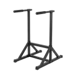

L Sit
An advanced static hold with legs extended parallel to the floor, demanding hip flexor and core strength.
Full body · Dip Station · Advanced

Muscles worked by the L Sit
Primary
Secondary
Also called: hip flexor, iliopsoas, psoas, iliacus, hip flexors, abs.
Equipment

Dip StationAlso called: parallel bars, dip bars, parallettes, dip stand, p-bars.
How to do the L Sit
- Sit on the floor or press up on parallel bars with arms straight.
- Lock your elbows and depress your shoulders.
- Lift your legs straight out in front of you parallel to the floor.
- Form an L shape with your body.
- Hold the position for the prescribed duration.
- Lower your legs with control to exit.
Form tips
- Bend your knees into a tuck position if the full hold is too hard.
- Point your toes and squeeze your quads to keep legs straight.
- Breathe steadily during the hold rather than holding your breath.
At a glance
| Body part | Full body |
|---|---|
| Category | Strength |
| Force type | Static |
| Mechanic | Compound |
| Difficulty | Advanced |
| Equipment | Dip Station |
| Goals | Hypertrophy, Strength |
| Tags | Knee safe, Shoulder safe, No axial load, Lower back safe |
| MET | 6.0 (metabolic equivalent, for calorie estimates) |
| Unilateral | No |
| Bodyweight | No |
| Dataset id | l-sit |
L Sit in German & Spanish
| German | L-Sit |
|---|---|
| Spanish | L-Sit |
Descriptions, instructions and tips ship in all three languages in the JSON.
Related exercises
Exercise data (JSON)
The record below is exactly what exercises.json ships for this exercise — names, descriptions, instructions and tips in English, German and Spanish.
{
"id": "l-sit",
"name_en": "L Sit",
"name_de": "L-Sit",
"name_es": "L-Sit",
"description_en": "An advanced static hold with legs extended parallel to the floor, demanding hip flexor and core strength.",
"description_de": "Eine anspruchsvolle statische Halteübung für Bauch und Hüftbeuger, bei der die gestreckten Beine parallel zum Boden ein L formen.",
"description_es": "Un ejercicio isométrico avanzado en el que el cuerpo forma una L con las piernas extendidas, exigente para el core y los flexores de cadera.",
"category": "strength",
"force_type": "static",
"mechanic": "compound",
"difficulty": "advanced",
"equipment": "dip_station",
"body_part": "full_body",
"primary_muscles": [
"hip_flexors",
"rectus_abdominis"
],
"secondary_muscles": [
"latissimus_dorsi",
"quadriceps",
"triceps_brachii"
],
"goals": [
"hypertrophy",
"strength"
],
"tags": [
"knee_safe",
"shoulder_safe",
"no_axial_load",
"lower_back_safe"
],
"variation_group": "static-hold",
"is_unilateral": false,
"is_bodyweight": false,
"instructions_en": [
"Sit on the floor or press up on parallel bars with arms straight.",
"Lock your elbows and depress your shoulders.",
"Lift your legs straight out in front of you parallel to the floor.",
"Form an L shape with your body.",
"Hold the position for the prescribed duration.",
"Lower your legs with control to exit."
],
"instructions_de": [
"Setze dich auf den Boden oder stütze dich an parallelen Stangen mit geraden Armen ab.",
"Strecke die Ellbogen durch und drücke die Schultern nach unten.",
"Hebe die Beine gestreckt vor dir auf Bodenhöhe an.",
"Forme mit deinem Körper eine L-Form.",
"Halte die Position für die vorgegebene Dauer.",
"Senke die Beine kontrolliert ab."
],
"instructions_es": [
"Siéntate en el suelo o empuja hacia arriba en barras paralelas con los brazos rectos.",
"Bloquea los codos y deprime los hombros.",
"Eleva las piernas rectas al frente paralelas al suelo.",
"Forma una L con el cuerpo.",
"Mantén la posición durante el tiempo indicado.",
"Baja las piernas con control para salir."
],
"tips_en": [
"Bend your knees into a tuck position if the full hold is too hard.",
"Point your toes and squeeze your quads to keep legs straight.",
"Breathe steadily during the hold rather than holding your breath."
],
"tips_de": [
"Halte die Knie durchgestreckt und ziehe die Zehen lang nach vorn.",
"Atme während des Haltens ruhig weiter, statt die Luft anzuhalten.",
"Beginne mit kurzen Haltezeiten und steigere die Dauer schrittweise."
],
"tips_es": [
"Mantén las puntas de los pies estiradas hacia delante.",
"Si no llegas, empieza con las rodillas recogidas.",
"Respira de forma constante; no aguantes el aire durante el sostén."
],
"met": 6.0,
"images": {
"flat": {
"main": "images/flat/l-sit-main.webp"
}
}
}Fetch just this exercise
const { exercises } = await fetch(
"https://exercise-dataset.com/exercises.json"
).then(r => r.json());
const ex = exercises.find(e => e.id === "l-sit");Free for personal and commercial in-app use with attribution (“Exercise data by RepDB”) — see the license and ready-made attribution snippets. Redistributing the data as a dataset or API is not permitted.